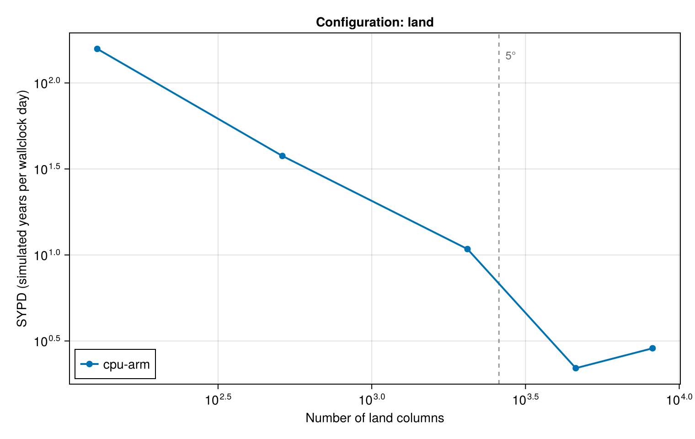
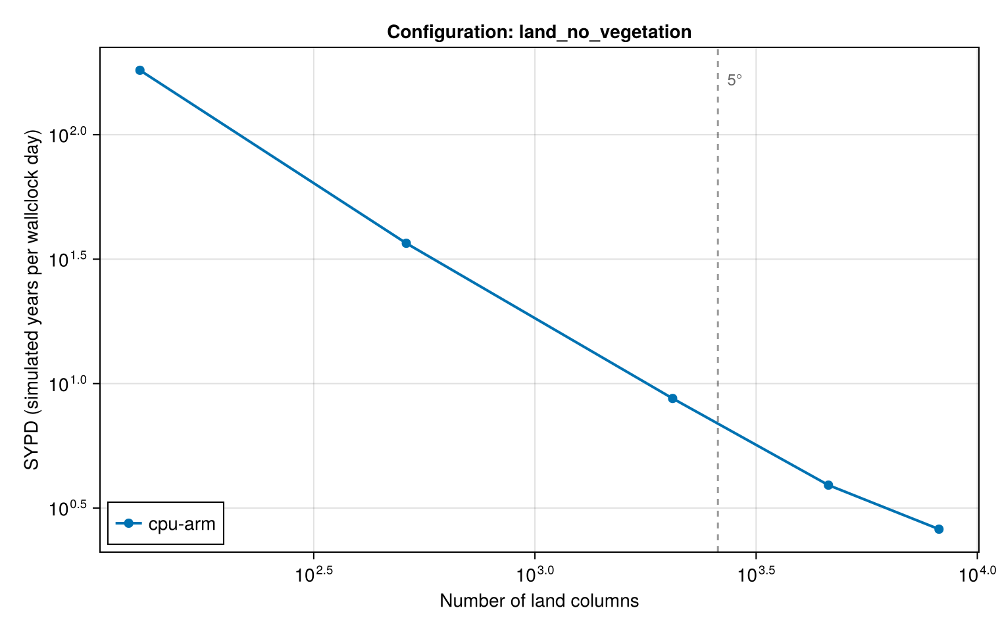
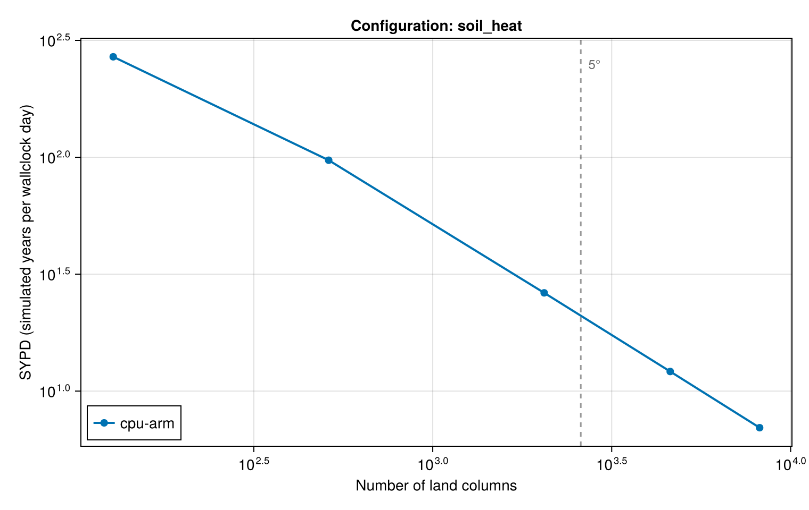

Benchmarks
Performance of Terrarium.jl across architectures and resolutions. This page is generated at documentation-build time from benchmark/assets/benchmark_results.json, which is updated by benchmark/manual_benchmarking.jl. Running the benchmark on another architecture adds a series to each figure, a column to the overview table, and a section to the bottom of this page.
Every configuration runs for a fixed number of time steps without output. Initialization and — under Reactant — XLA compilation happen before the clock starts and are reported separately; the timed section covers only the stepping loop. A run is timed once and takes a few seconds, so treat the numbers as indicative: ±20% between repetitions is normal.
The benchmark grids are full Gaussian grids in which every point is an active land column, so a real land–sea mask at the same resolution has roughly a third as many columns. The model configurations themselves are defined in benchmark/model_configurations.jl.
Scaling with resolution



Overview: SYPD across architectures
Simulated years per wallclock day for each configuration and resolution. — means the architecture has not been benchmarked yet, skipped that resolution, or could not run that configuration; the per-architecture sections below say which.
| Configuration | Columns | cpu-arm |
|---|---|---|
land | 128 | 158 |
land | 512 | 38 |
land | 2048 | 11 |
land | 4608 | 2.2 |
land | 8192 | 2.87 |
land | 18432 | — |
land | 41472 | — |
land | 73728 | — |
land | 165888 | — |
land_no_vegetation | 128 | 181 |
land_no_vegetation | 512 | 37 |
land_no_vegetation | 2048 | 8.72 |
land_no_vegetation | 4608 | 3.91 |
land_no_vegetation | 8192 | 2.6 |
land_no_vegetation | 18432 | — |
land_no_vegetation | 41472 | — |
land_no_vegetation | 73728 | — |
land_no_vegetation | 165888 | — |
soil_heat | 128 | 269 |
soil_heat | 512 | 97 |
soil_heat | 2048 | 26 |
soil_heat | 4608 | 12 |
soil_heat | 8192 | 6.97 |
soil_heat | 18432 | — |
soil_heat | 41472 | — |
soil_heat | 73728 | — |
soil_heat | 165888 | — |
Architecture: cpu-arm
Created for Terrarium.jl v0.1.4 on Mon, 03 Aug 2026 17:44:34 in quick mode (0.25x time steps, 1 thread(s)).
Machine details — cpu-arm
julia> versioninfo()
Julia Version 1.11.9
Commit 53a02c0720c (2026-02-06 00:27 UTC)
Build Info:
Official https://julialang.org/ release
Platform Info:
OS: macOS (arm64-apple-darwin24.0.0)
CPU: 8 × Apple M3
WORD_SIZE: 64
LLVM: libLLVM-16.0.6 (ORCJIT, apple-m2)
Threads: 1 default, 0 interactive, 1 GC (on 4 virtual cores)Model configurations, default resolution — cpu-arm
| Configuration | Res | Columns | Δt | Steps | SYPD | ms/step | Mcell-steps/s | Memory |
|---|---|---|---|---|---|---|---|---|
| land | 3.75° | 4608 | 600 | 54 | 2.52 | 651 | 0.212 | 6.85 MiB |
| landnovegetation | 3.75° | 4608 | 600 | 54 | 5.85 | 281 | 0.492 | 5.76 MiB |
| soil_heat | 3.75° | 4608 | 600 | 54 | 14 | 119 | 1.17 | 3.85 MiB |
Land model, horizontal resolution — cpu-arm
| Configuration | Res | Columns | Δt | Steps | SYPD | ms/step | Mcell-steps/s | Memory | Status |
|---|---|---|---|---|---|---|---|---|---|
| land | 22.50° | 128 | 600 | 500 | 158 | 10.4 | 0.369 | 203.62 KiB | ok |
| land | 11.25° | 512 | 600 | 488 | 38 | 43.7 | 0.352 | 787.12 KiB | ok |
| land | 5.62° | 2048 | 600 | 122 | 11 | 152 | 0.405 | 3.05 MiB | ok |
| land | 3.75° | 4608 | 600 | 54 | 2.2 | 748 | 0.185 | 6.85 MiB | ok |
| land | 2.81° | 8192 | 600 | 30 | 2.87 | 573 | 0.429 | 12.17 MiB | ok |
| land | 1.88° | 18432 | — | — | — | — | — | — | skipped |
| land | 1.25° | 41472 | — | — | — | — | — | — | skipped |
| land | 0.94° | 73728 | — | — | — | — | — | — | skipped |
| land | 0.62° | 165888 | — | — | — | — | — | — | skipped |
Land model without vegetation, horizontal resolution — cpu-arm
| Configuration | Res | Columns | Δt | Steps | SYPD | ms/step | Mcell-steps/s | Memory | Status |
|---|---|---|---|---|---|---|---|---|---|
| landnovegetation | 22.50° | 128 | 600 | 500 | 181 | 9.05 | 0.424 | 171.16 KiB | ok |
| landnovegetation | 11.25° | 512 | 600 | 488 | 37 | 44.9 | 0.342 | 661.66 KiB | ok |
| landnovegetation | 5.62° | 2048 | 600 | 122 | 8.72 | 188 | 0.326 | 2.56 MiB | ok |
| landnovegetation | 3.75° | 4608 | 600 | 54 | 3.91 | 420 | 0.329 | 5.76 MiB | ok |
| landnovegetation | 2.81° | 8192 | 600 | 30 | 2.6 | 632 | 0.389 | 10.23 MiB | ok |
| landnovegetation | 1.88° | 18432 | — | — | — | — | — | — | skipped |
| landnovegetation | 1.25° | 41472 | — | — | — | — | — | — | skipped |
| landnovegetation | 0.94° | 73728 | — | — | — | — | — | — | skipped |
| landnovegetation | 0.62° | 165888 | — | — | — | — | — | — | skipped |
Soil heat conduction, horizontal resolution — cpu-arm
| Configuration | Res | Columns | Δt | Steps | SYPD | ms/step | Mcell-steps/s | Memory | Status |
|---|---|---|---|---|---|---|---|---|---|
| soil_heat | 22.50° | 128 | 600 | 500 | 269 | 6.11 | 0.629 | 114.63 KiB | ok |
| soil_heat | 11.25° | 512 | 600 | 488 | 97 | 16.9 | 0.908 | 443.13 KiB | ok |
| soil_heat | 5.62° | 2048 | 600 | 122 | 26 | 62.4 | 0.984 | 1.72 MiB | ok |
| soil_heat | 3.75° | 4608 | 600 | 54 | 12 | 135 | 1.02 | 3.85 MiB | ok |
| soil_heat | 2.81° | 8192 | 600 | 30 | 6.97 | 236 | 1.04 | 6.85 MiB | ok |
| soil_heat | 1.88° | 18432 | — | — | — | — | — | — | skipped |
| soil_heat | 1.25° | 41472 | — | — | — | — | — | — | skipped |
| soil_heat | 0.94° | 73728 | — | — | — | — | — | — | skipped |
| soil_heat | 0.62° | 165888 | — | — | — | — | — | — | skipped |
Number of soil layers — cpu-arm
| Configuration | Res | Columns | L | Δt | Steps | SYPD | ms/step | Mcell-steps/s | Memory |
|---|---|---|---|---|---|---|---|---|---|
| land | 3.75° | 4608 | 10 | 600 | 163 | 12 | 132 | 0.348 | 3.68 MiB |
| land | 3.75° | 4608 | 20 | 600 | 82 | 7.52 | 218 | 0.422 | 5.26 MiB |
| land | 3.75° | 4608 | 30 | 600 | 54 | 4.94 | 333 | 0.415 | 6.85 MiB |
| land | 3.75° | 4608 | 60 | 600 | 27 | 2.54 | 646 | 0.428 | 11.60 MiB |
| land | 3.75° | 4608 | 100 | 600 | 16 | 1.51 | 1090 | 0.423 | 17.94 MiB |
Number format, Float32 vs Float64 — cpu-arm
| Configuration | NF | Res | Columns | Δt | Steps | SYPD | ms/step | Mcell-steps/s | Memory |
|---|---|---|---|---|---|---|---|---|---|
| land | Float32 | 3.75° | 4608 | 600 | 54 | 4.38 | 375 | 0.368 | 6.85 MiB |
| land | Float64 | 3.75° | 4608 | 600 | 54 | 3.49 | 471 | 0.293 | 13.69 MiB |
Time stepper — cpu-arm
| Configuration | Variant | Res | Columns | Δt | Steps | SYPD | ms/step | Mcell-steps/s | Memory |
|---|---|---|---|---|---|---|---|---|---|
| land | ForwardEuler | 3.75° | 4608 | 600 | 54 | 5.18 | 317 | 0.436 | 6.85 MiB |
| land | Heun | 3.75° | 4608 | 600 | 54 | 1.09 | 1510 | 0.0915 | 6.85 MiB |